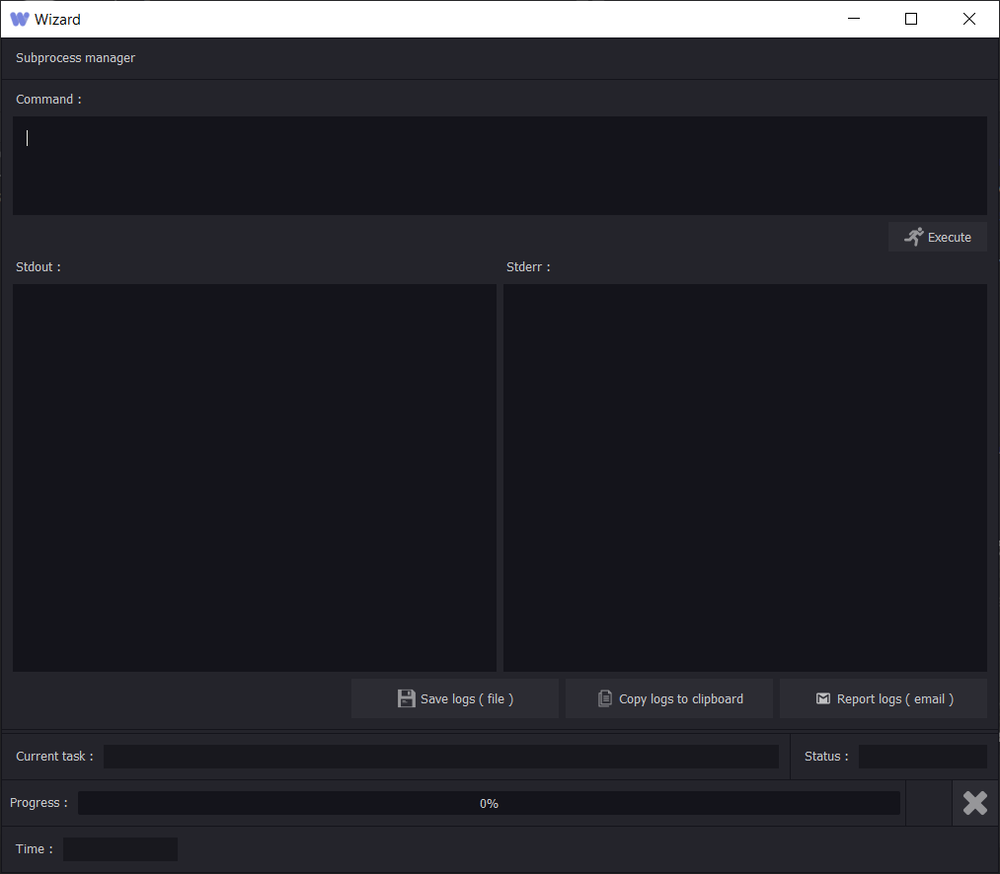
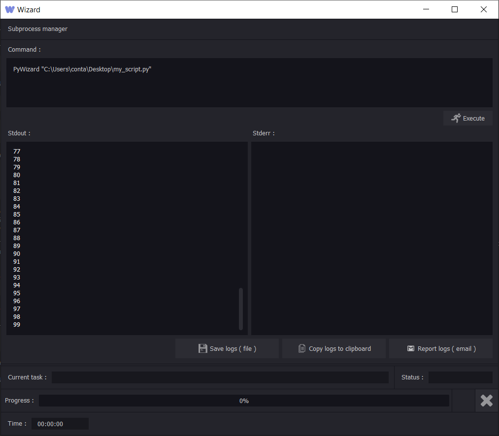

PyWizard¶
PyWizard is an executable file that allows you to use the wizard API without the interface.
It is extremely similar to a python.exe executable
You can use it in command line or give a python file in argument.
Python and PyWizard¶
Let’s try some python base libraries in PyWizard.
Launch PyWizard from the installation directory of wizard or from the ui ( tools>PyWizard ) and write this simple command
>>> print("Hello world")
>>> Hello world
Now let’s create a python file with some code inside
from datetime import datetime
import time
for a in range(3):
print(datetime.now())
time.sleep(0.1)
And run this script with PyWizard ( using the command line ):
PyWizard path/to/my_script.py
>>>2020-05-10 16:47:16.623591
>>>2020-05-10 16:47:16.723714
>>>2020-05-10 16:47:16.823834
Subprocess manager and PyWizard¶
The Wizard Subprocess Manager is a user interface to execute commands. It contains a command text edit, an execute button, a standart output, an error output, a “current task” and “status” fields, a progress bar, and a kill button.
{kind=link}
Note
Actually the subprocess manager doesn’t contains any standart input.
Lets create a simple script:
for a in range (100):
print(a)
And save it as ‘my_script.py’
Now, call it in the Subprocess Manager with the PyWizard executable and click on ‘execute’
{kind=link}
As said above, the Subprocess Manager is for users, you can write scripts for users and give them a understandable execution.
Let’s create an other script:
import time
import sys
print('current_task:Updating the progress bar each second') # Will update the 'current task' field in the ui
print('status:Starting...') # Will update the 'status' field in the ui
sys.stdout.flush() # Refresh the stdout to update the subprocess ui
for a in range(100):
print(f'percent:{float(a)}') # Will update the progress bar
time.sleep(1)
sys.stdout.flush()
Note
Don’t forget to flush the standart output ( sys.stdout.flush() ) to get a real time progress.
{kind=link}
Note
The print() functions that are in the script only updates the ui ( status, current task and progress bar ), they are hidden in the standart output and standart error.
Warning
The Subprocess manager is running python threads, it is important to tell the subprocess manager that your script is done by adding this line
at the end of your script print('status:Done !')
So here is the full script:
import time
import sys
print('current_task:Updating the progress bar each second')
print('status:Starting...')
sys.stdout.flush()
for a in range(100):
print(f'percent:{float(a)}')
time.sleep(1)
sys.stdout.flush()
print('status:Done !')
{kind=link}